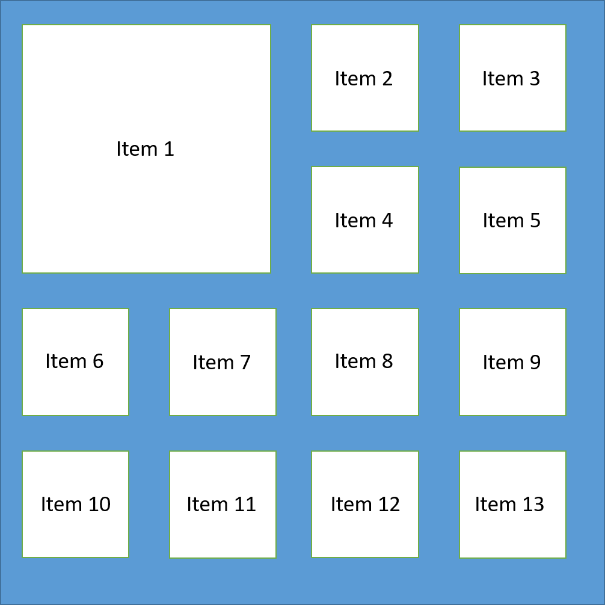

CSS Grid

CSS grid nace de la necesidad de distribuir los elementos de un documento en el mismo, organizar de una manera estética para la visualización del mismo. Grid es un sistema cuadricula dividido en celdas y columnas dándole un tamaño, posición y colocación a gusto. Para empezar a utilizar esta función debemos especificar primero el número de celdas que conformaran nuestro esquema, después de esto ya distribuimos cada componente que ocupara su respectiva celda.

En esta imagen podemos tener una idea de cómo es la distribución de la cuadricula y cómo podemos distribuir a nuestro gusto cada una de las celdas como el tamaño o la posición de la celda más grande con respecto a las demás, esto nos ayuda a tener un mejor orden en la presentación.
Primero debemos indicar con display que vamos a utilizar las cuadriculas y debemos especificar uno de los dos valores que queremos utilizar: grid o inline-grid
Para definir las cuadriculas debemos indicar el tamaño de sus filas y columnas utilizando las propiedades grid-template-columns y grid-template-rows. Después especificamos las fracciones que serán divididas con ayuda de fr: grid-template-columns: 1fr 1fr. grid-template-rows: 2fr 1fr
Mariño M. agosto 2019. CSS Grid: Ventajas y primeros pasos. Recuperado de: https://dinahosting.com/blog/css-grid-ventajas-y-primeros-pasos/
KeepCoding. Junio de 2022. Posicionamiento avanzado con CSS Grid. Recuperado de: https://keepcoding.io/blog/posicionamiento-avanzado-con-css-grid/
Alberca C. Enero de 2018. Maquetación con CSS Grid. Recuperado de: https://www.adictosaltrabajo.com/2018/01/30/maquetacion-con-css-grid/